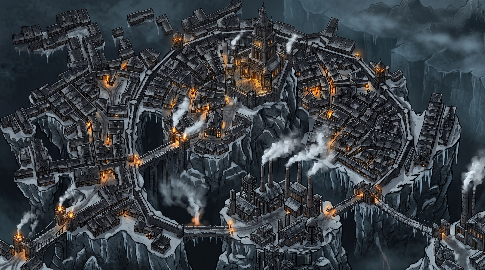
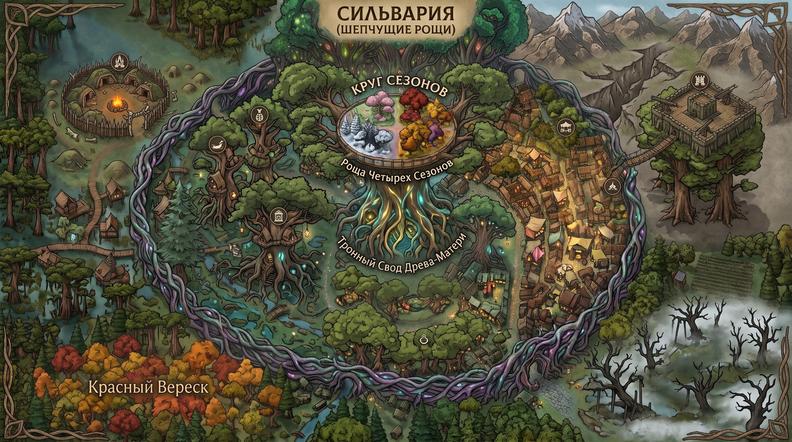
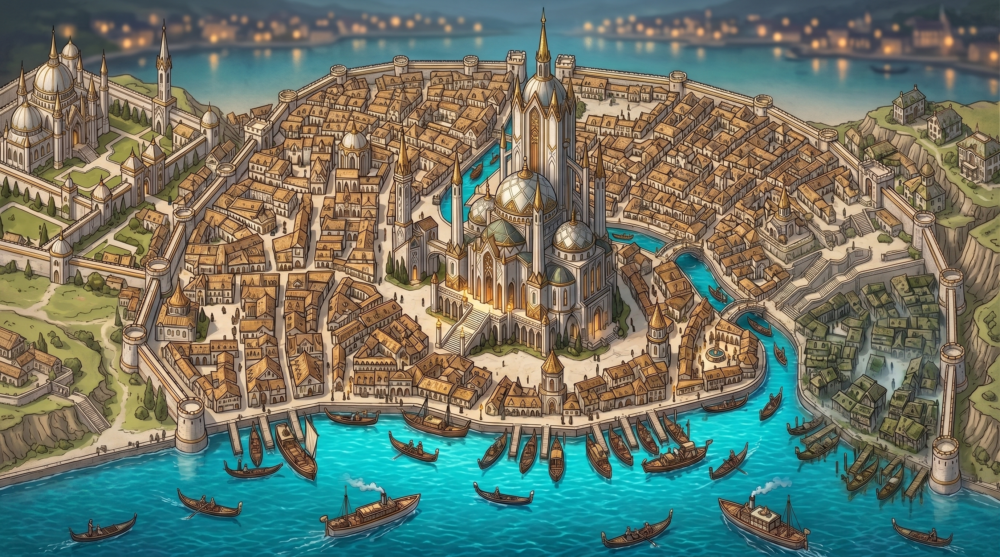
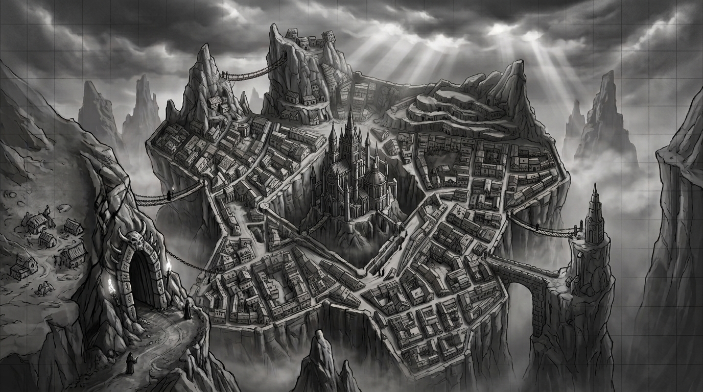

«Плоть слаба. Шестерни вечны.»
Верховный Архонт Валории.
«Мы не спешим. Лес помнит всё.»
Матриарх Сильварии.
«У каждого секрета есть своя цена.»
Великий Дож Аквиллы.
«Ибо тьма очищается лишь огнем.»
Патриарх Кхор-Тула.